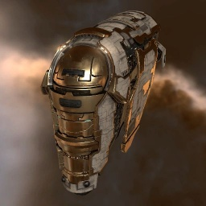

Augoror

Тип корабля: Крейсер
Государство/Организация: Amarr
Примерная стоимость: 9.430.000 ISK
Описание
В 114-м году по юлайскому летоисчислению крупнейшие государства галактики, увязшие в тяжёлой, затяжной войне без конца и края, были вынуждены обратить внимание на растущую потребность военных флотов в ремонтных кораблях и кораблях обеспечения — она диктовалась самим характером продолжительных боевых действий в межзвёздном масштабе, способных полностью измотать противоборствующие стороны. Инженеры тщательно рассмотрели особенности конструкции всех имеющихся вариантов фрегатов и крейсеров, и в Амаррской Империи одним из результатов такого подробного разбора стал существенно переработанный и вновь выпущенный в свет крейсер «Авгурор». Крейсеры типа «Авгурор» — ветераны амаррских войн. Они участвовали и в Джовианской войне, и в подавлении Матарского Восстания. Как и в большинстве кораблей производства Амаррской Империи, основная ставка в проекте «Авгурор» сделана на прочность и толстую броню, позволяющую выйти из столкновения с противником в целости и сохранности. После пересмотра проекта «Авгурор» утратил часть брони, что позволило установить на него оборудование, позволяющее проводить дистанционный ремонт брони дружественных кораблей и осуществлять передачу энергии.
Характеристики
Корпус
Запас прочности корпуса: 1.550 ед.
Вместимость грузового отсека: 465 м^3
Объем отсека для дронов: 20 м^3
Пропускная способность канала телеуправления: 20 Мбит/с
Масса: 12.870.000 кг
Занимает объем: 115.000,0 м^3 (10.000,0 м^3 в разобранном виде)
Влияние инертности конструкции: 0,56x
Сопротивление корпуса ЭМ-урону: 33 %
Сопротивление корпуса термальному урону: 33 %
Сопротивление корпуса кинетическому урону: 33 %
Сопротивление корпуса фугасному урону: 33 %
Броня
Запас прочности брони: 1.650 ед.
Сопротивление брони ЭМ-урону: 50 %
Сопротивление брони термальному урону: 35 %
Сопротивление брони кинетическому урону: 25 %
Сопротивление брони фугасному урону: 20 %
Щит
Запас прочности щита: 1.000 ед.
Влияние на время регенерации щитов: 20 минут и 50 секунд
Сопротивление щита ЭМ-урону: 0 %
Сопротивление щита термальному урону: 20 %
Сопротивление щита кинетическому урону: 40 %
Сопротивление щита фугасному урону: 50 %
Сопротивление средствам РЭП
Сопротивление накопителя нейтрализирующему воздействию: 0 %
Сопротивление воздействию генератору стазис-поля: 0 %
Сопротивление воздействию помех на наводку вооружения: 0 %
Накопитель энергии
Емкость накопителя: 2.250,0 ГДж
Время востановления заряда: 7 минут и 30 секунд
Целеуказания
Максимальная дальность захвата цели: 60 км
Максимальное количество захваченных целей: 8
Радиус сигнатуры: 90 м
Разрешающая способность систем захвата цели: 300 мм
Эффективность радарной системы: 13 ед.
Эффективность магнитнометрической системы: -
Эффективность гравиметрической системы: -
Эффективность ладарной системы: -
Двигательная установка
Максимальная скорость: 235 м/с
Скорость в варп-режиме: 4,0 а.е./с.
Служба оснащения
Мощность ЦПУ: 275,0 Тф
Мощность реактора: 650 МВт
Калибровка: 400 ед.
Точки монтажа орудийных установок: 3
Точки монтажа пусковых установок: -
Разъемы большой мощности: 5
Разъемы средней мощности: 3
Разъемы малой мощности: 5
Разъемы под установку тюнинг-модулей: 3